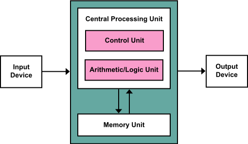
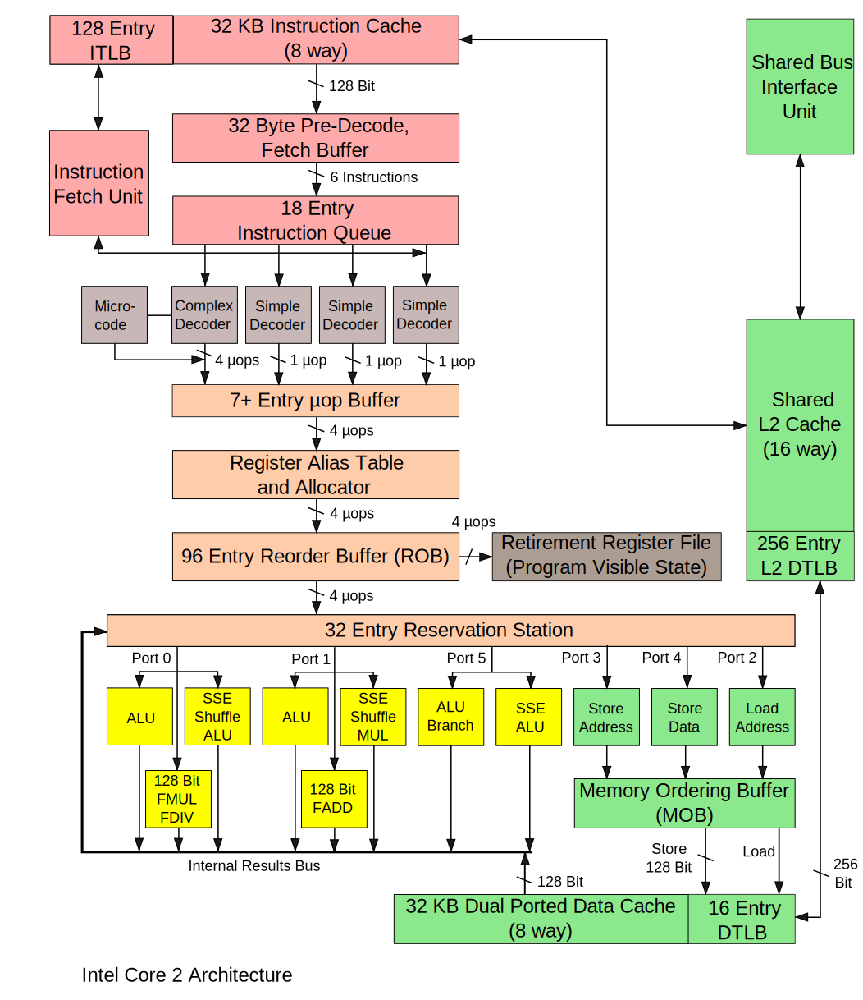
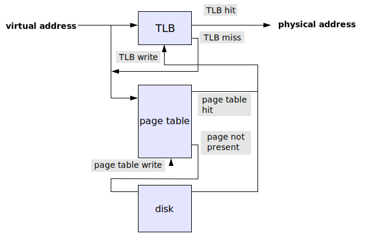

von Neumann architecture: Abstract model of how a computer works:
Major functional blocks of Intel Core2 processor (~10 years old)

Switching power P ~ CfV2 + Pstatic
Transistors vs. wires
- Current rule of thumb: Transistors cheap, wires expensive.
- So was the old rule wrong all the time? No, back when it was formulated it was Ok. So what happened?
- Semiconductor scaling trends...
- This trend is continuing
- Processors are, and will become more so, bandwidth/latency starved rather than bottlenecked by arithmetic performance.
Latency Comparison Numbers (Jeff Dean, Google)
L1 cache reference 0.5 ns
Branch mispredict 5 ns
L2 cache reference 7 ns 14x L1 cache
Mutex lock/unlock 25 ns
Main memory reference 100 ns 20x L2 cache, 200x L1 cache
Compress 1K bytes with Snappy/LZ4 3,000 ns
Send 1K bytes over 1 Gbps network 10,000 ns Triton IB network A LOT faster
Read 4K randomly from SSD* 150,000 ns
Read 1 MB sequentially from memory 250,000 ns
Round trip within same datacenter 500,000 ns Triton IB network 5000ns
Read 1 MB sequentially from SSD* 1,000,000 ns
Disk seek 10,000,000 ns
Read 1 MB sequentially from disk 20,000,000 ns
Send packet CA->Netherlands->CA 150,000,000 ns
SCI Cluster node double precision FP throughput
| Generation | Clock (GHz) | CPU cores | Scalar thr (flops/core/cycle) | Vector thr (flops/core/cycle) | Total thr (GFlops/s) |
|---|---|---|---|---|---|
| Kvartsi2004 | 2.2 | 1 | 2 | 2 SSE2 | 8.8 |
| Kvartsi2006 | 2.4 | 2 | 2 | 2 | 19.2 |
| Triton2009 | 2.6 | 6 | 2 | 4 SSE2 hw | 125 |
| Triton2011 | 2.66 | 6 | 2 | 4 | 128 |
| Triton2014 | 2.8 | 10 | 2 | 8 AVX | 448 |
| Triton2015? | 2.6 | 12 | 2 | 16 AVX2 | 998 |
Accessing memory and virtual->physical mapping
Caching
- Since memory is (relatively) slow, multiple levels of cache
- Typical contemporary configuration
| Type | Size (kB) | Min latency (clock cycles) |
|---|---|---|
| L1 | 32+32 | 4 |
| L2 | 256 | 11 |
| L3 | 2500 (per core, shared) | 36 |
| main, local | - | 200 |
| main, non-local | - | 300(?) |